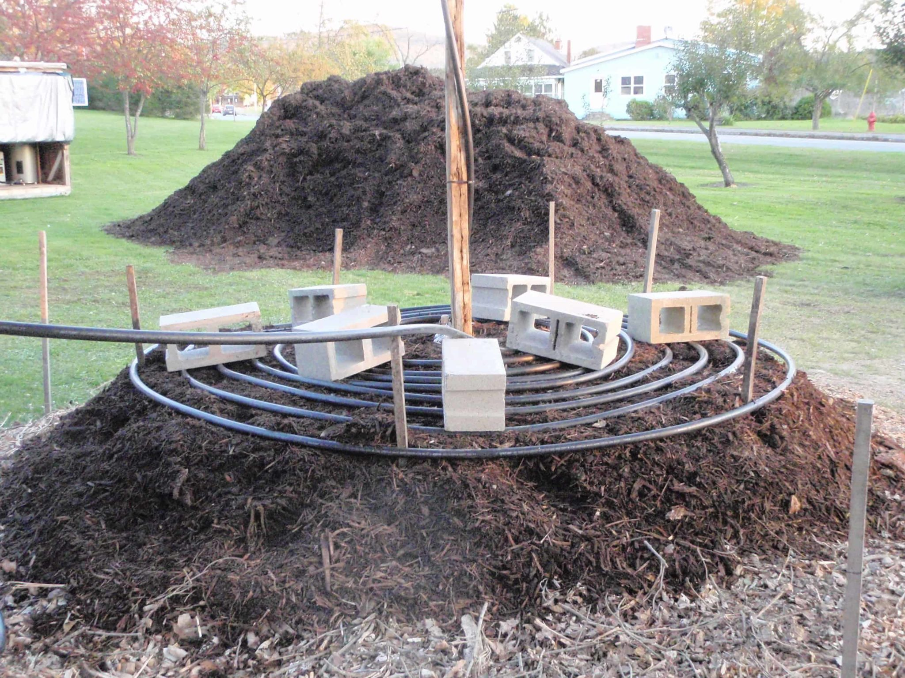
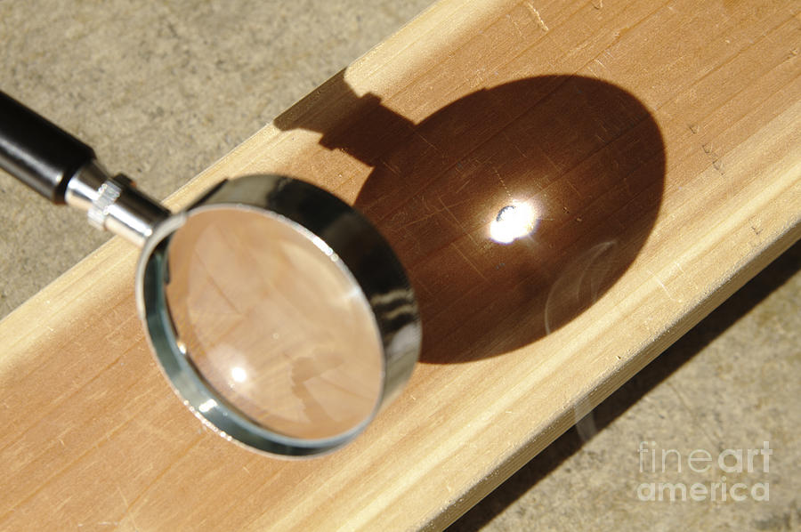
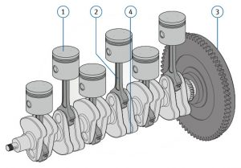

<topbar style="display:none;">
<item><a href="../index.html">Home</a></item>
<item><a href="../about.html">About</a></item>
</topbar>
## Week 2 - Brainstorming
Monday - Our table had a number of ideas for generating energy:
<ul>
<li>Using a heat or pressure gradient in air to drive some kind of mechanism to generate power</li>
<li>Compost; as it decomposes, compost releases energy, and so it would be a good idea to use that to generate a heat gradient</li>

<li>Lenses; using lenses to magnify the energy of the sun into a certain spot</li>

<li>Springs/Platforms; Having platforms that can compress from weight, such as people on sidewalks, pushing down springs or pistons which drive a crankshaft, similar to a combustion engine</li>

</ul>